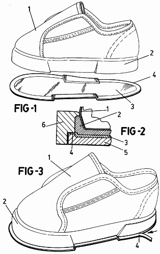

piezas de zapatos
Escrito el: 16/12/2021: admin
- Talón: Zona posterior que cubre el pie.
- Tacón: Pieza, de mayor o menor altura, incorporada a la suela del zapato en la zona posterior junto con el talón (pieza que toca el suelo donde caminamos)
- Cuarto: Es la zona que queda en el aire para que el pie no quede plano y amortigüe a la hora de la pisada.
- Palas: Parte superior del zapato, que cubre el pie por encima.
- Puntera: Es la zona de delante del zapato donde cubre los dedos.
- Suela: Parte del calzado que toca la superficie, hecha normalmente de cuero fuerte o de materiales sintéticos. Se le puede llamar "piso" o "fondo".
- Orejas: Parte del zapato que sobresale a ambos lados y se sujeta sobre el empeine.
- Cordoneras: Es un accesorio que se le añade al zapato para la sujeción del pie.
- Forro: Es un material de cuero o textil que cubre generalmente el interior del zapato y está en contacto con la piel.
- Lengüeta: Es un trozo de material que está colocado debajo de los cordones realizado del mismo material que el zapato.
- Ojales: Son los pequeños agujeros que están encima de la lengüeta y donde se introducen los cordones.
- Empeine: Es la parte que esta con las orejas y envuelve el pie.
- Cerco: Tira flexible, normalmente de piel, colocada a lo largo del canto del piso.